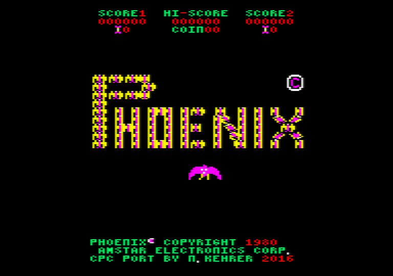
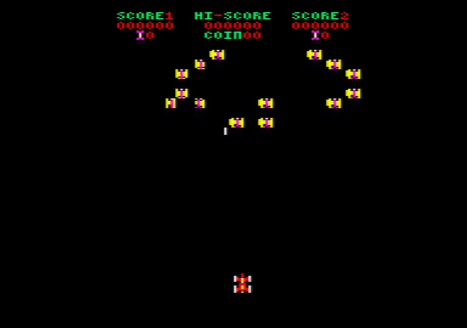
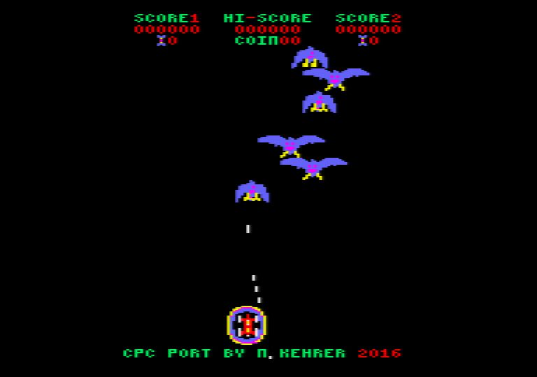
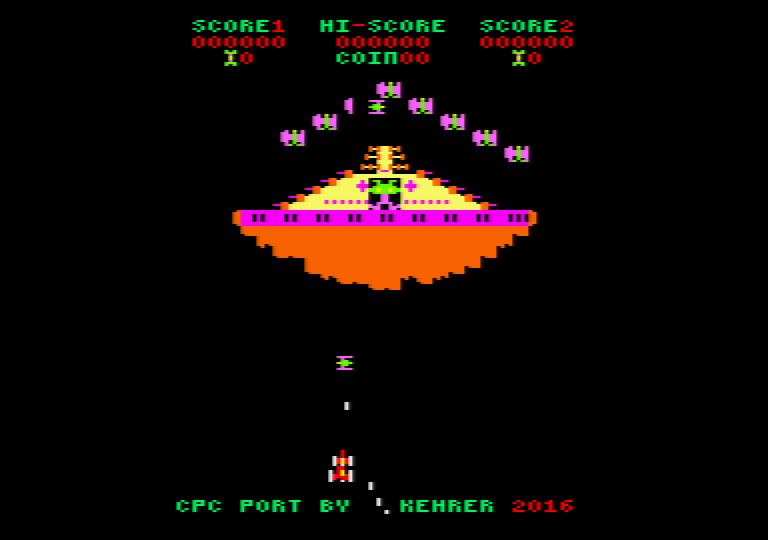
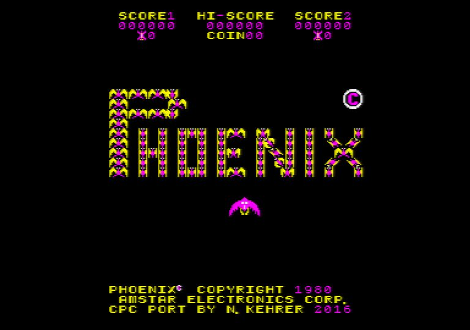
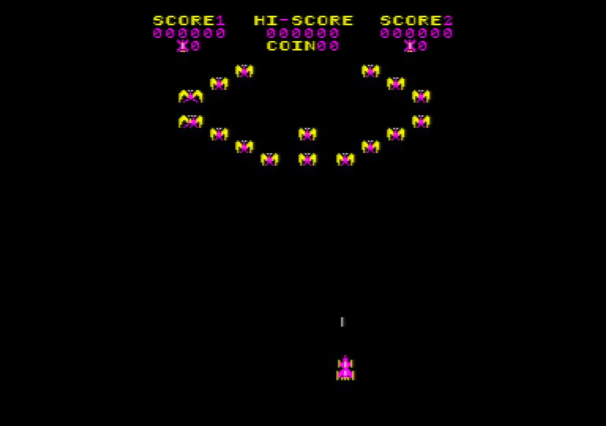
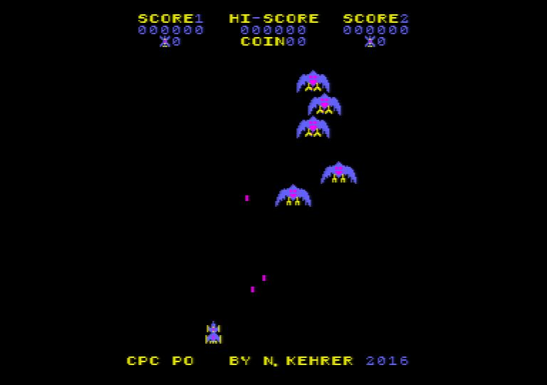
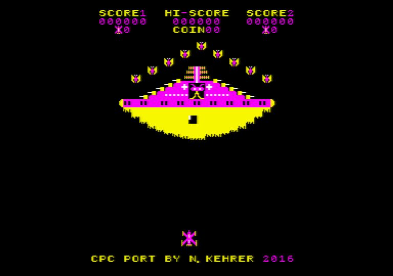

The program can be downloaded as a CPC "dsk" file here: phoenix.dsk
You can use this file with a CPC emulator or put it on a floppy disk or on tape and play it on the real machine.
The disk image contains two files. Run the file "phoenix" for the 16-color version with lower resolution, or alternatively run the file "phoenixh" for a 4-color version with high resolution.
In the following there are some screenshots of the running game (both versions):
|  |  |
|  |  |
|  |  |
|  |  |
Here are also two videos of the running emulator: